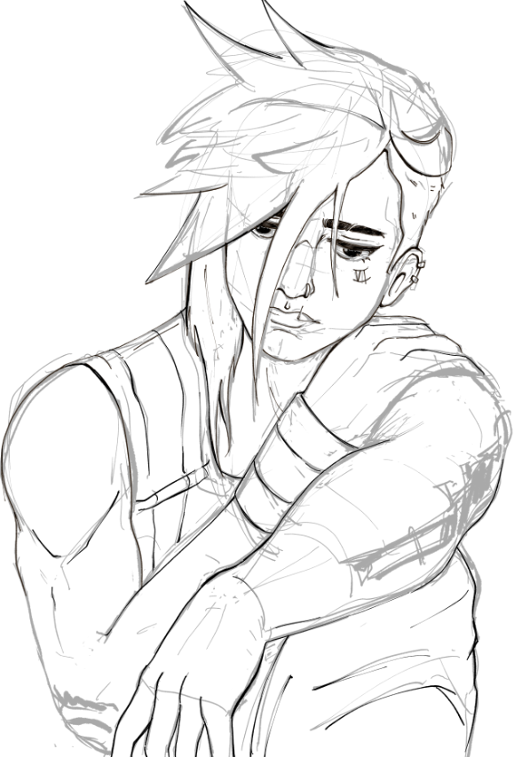

(sou eu ^)
Tirei o curso de Design de Comunicação especializado em Web Design.
Adoro fazer arte 2D e 3D.
Explora alguns dos meus sites
Gosto de desenvolver os designs no Figma e dar-lhes vida com HTML e CSS.
Isto são alguns dos meus trabalhos
Arte 2D e 3D

estudo de ilsutração de jogo

quarto isométrico lowpoly
fanart de arcane
Faço os meus desenhos no Clip Studio Paint e o 3D no Blender apesar de nunca os acabar.